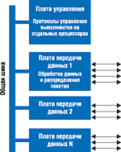
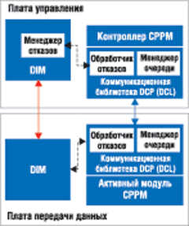
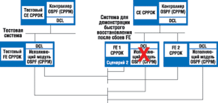

Александр Семенов
Отказы сетевых соединений из-за проблем с аппаратным и программным обеспечением могут вызвать длительные перерывы в предоставлении услуг. Если кратковременные сбои для пользователей Интернета еще допустимы, то разрыв телефонных соединений - уже нет. Сегодня, когда скорости соединений выросли от мегабит до гигабит, отказ в предоставлении услуг даже на несколько секунд может привести к потере гигабитного трафика.
Современные протоколы маршрутизации позволяют обеспечить альтернативные маршруты в случае отказа. Но процесс определения и ликвидации сбоя может занимать много времени, приводя к потере большого количества сетевых пакетов. А если учесть постоянно растущее предложение услуг в реальном времени, например, IP-телефонии и видео по запросу, потеря больших объемов трафика может существенно отразиться на качестве обслуживания пользователей. Чтобы предотвратить потерю данных, необходимы сетевые технологии, которые способны продолжать работу, даже несмотря на сбои.
Скорости сетевых соединений и объемы коммуникационных услуг сегодня имеют тенденцию к постоянному увеличению. Чтобы соответствовать новому уровню предоставляемых услуг, необходимы и новые средства управления - интеллектуальные и масштабируемые. Архитектура Distributed Control Plane (DCP) 1.0 как раз и разработана для того, чтобы удовлетворять современным требованиям к масштабируемости управления сетями с помощью распределения функций управления между несколькими процессорами.
Для управления сетями достижение высокой работоспособности - одна из главнейших задач. Учитывая это, корпорация Intel (http://www.intel.com) разработала расширение архитектуры DCP - Extended DCP. Это расширение обеспечивает максимальную работоспособность благодаря протоколам, которые поддерживают функционирование системы, несмотря на отказы оборудования или сбои в программах. Архитектура Extended DCP реализована на программируемых сетевых процессорах и поддерживает быстрое восстановление после сбоев и быстрый перезапуск. Для быстрого восстановления после сбоев необходимы системы резервного копирования и синхронизация состояний системы между активными и резервными процессами.
Быстрый перезапуск протоколов управления может минимизировать время простоя сети в тех случаях, когда недоступны резервные ресурсы. При тестировании архитектуры Extended DCP был продемонстрирован целый ряд решений, которые позволяют уменьшить время определения неисправности и быстро переключиться с активных систем на резервные.
Распределенные платы управления
Системы управления сетями включают маршрутизаторы IP, коммутаторы уровня 3, а также контроллеры радиосетей 3G, которые обеспечивают три уровня функционирования: управление, передачу данных и контроль. Уровень управления предназначен для выполнения сигнальных и других протоколов управления, а также для конфигурирования уровня передачи данных, который выполняет обработку пакетов - продвижение данных по протоколу IP и сортировку по скоростям линий передачи. Плата управления позволяет изменить работу системы передачи данных, которая обычно реализована на базе универсального процессора. ПО для таких систем, как правило, пишется на языках высокого уровня - C или C++. Внешний интерфейс обеспечивает администратору контроль над системой в целом.
На рис. 1 показана типичная система управления сетью, состоящая из платы управления и нескольких плат для передачи данных. Всю работу уровня управления обеспечивает плата управления, а вся обработка данных и распределение пакетов выполняются платами передачи данных. Обычно все платы соединены между собой общей шиной. Это соединение используется для передачи как данных, так и управляющих сигналов между платами. Программные интерфейсы форума Network Processor Forum (NPF) и спецификации Forwarding and Control Element Separation (ForCES) группы IETF (Internet Engineering Task Force) предусматривают стандартные интерфейсы для связи компонентов плат управления с компонентами плат передачи данных.
|  | Рис. 1. Архитектура типичной системы управления сетью.
|
У этой архитектуры есть два основных преимущества. Во-первых, вычислительные ресурсы для плат управления и плат передачи данных разделены. Это позволяет изменять их мощность независимо друг от друга. Во-вторых, для построения системы можно использовать компоненты от разных производителей.
Когда протоколы маршрутизации и протоколы обмена сигналами работают на одном процессоре, это создает повышенную нагрузку на плату управления, и из-за нехватки ресурсов могут возникнуть узкие места. Архитектура Distributed Control Plane позволяет ликвидировать эти узкие места за счет простого распределения управляющих протоколов между множеством процессоров. Например, алгоритм маршрутизации по протоколу OSPF Hello требует значительных вычислительных ресурсов. Но благодаря тому, что этот алгоритм достаточно изолирован, все функции передачи и приема сообщений протокола OSPF Hello можно переложить на плату передачи данных, имеющую соответствующий интерфейс. Таким образом, удается существенно увеличить производительность путем передачи различных функций соответствующим вычислительным ресурсам системы.
Кроме проблем масштабируемости, существенных для работы протоколов, которые позволяет решить архитектура DCP, сами протоколы также подвержены сбоям из-за отказов сетевых соединений, аппаратуры и ПО. Основная цель архитектуры Extended DCP - увеличить время доступности элементов сети и таким образом улучшить сходимость сетей. Заметим, что ускорить сходимость можно и с помощью сетевого протокола с избыточностью - Virtual Router Redundancy Protocol (VRRP), а также с помощью систем аппаратной защиты. Однако это не всегда помогает, поскольку с увеличением количества IP-сервисов отказы элементов сети могут привести к прекращению выполнения сервисов даже при использовании аппаратной защиты и протокола VRRP. Поэтому DCP в первую очередь предназначена для того, чтобы обеспечить доступность отдельных элементов сети, а не сети в целом, а также для того, чтобы предоставить широкий спектр механизмов обеспечения работоспособности.
Ниже мы подробно обсудим архитектуру Extended DCP и покажем, как она обеспечивает быстрое восстановление после сбоев и быстрый перезапуск.
Архитектура Extended DCP
Как видно из рис. 2, компоненты архитектуры Extended DCP - это модуль инфраструктуры распределенной платы управления (DCP infrastructure module, DIM) и менеджер отказов DIM (DIM fault manager, DFM), расположенные на плате управления; коммуникационная библиотека DCP (DCP communication library, DCL) и обработчик отказов DCL, а также множество модулей протокола контрольной точки (control point protocol module, CPPM). Протокол первоочередного открытия кратчайших маршрутов OSPF (Open Shortest Path First) - пример сетевого протокола, реализованного в модулях CPPM.
|  | Рис. 2. Архитектура Extended DCP.
|
Модуль CPPM можно представить как одну функцию протокола, которая выполняется в контрольной точке. Такая функция управления протоколом может полностью обеспечивать функционирование протокола или выполнять часть его работы. В таком случае остальные функции выполняются другими модулями CPPM в другой контрольной точке. Пример последней функции - реализация протокола OSPF Hello.
Кроме коммуникационных функций, в модули CPPM включены функции поиска других CPPM, принадлежащих тому же уровню. Эту задачу выполняют DIM, для чего предусмотрен программный интерфейс CPPM Registration API (CR API). После инициализации каждая DCL регистрируется в DIM под именем соответствующего модуля CPPM. В результате такого расширения возможностей DCL могут получить информацию о других модулях CPPM в сети и зарегистрироваться для обслуживания событий в сети.
DCL используют эту информацию для того, чтобы связать свой модуль CPPM с другими одноуровневыми CPPM. Интерфейс между одноуровневыми CPPM называется CPPM peer interface (CPI). В DIM имеются средства для мониторинга сети и для обновления DCL. В DIM и в DCL предусмотрена низкочастотная связь для постоянного наблюдения друг за другом. Этот механизм позволяет установить, функционируют различные модули или нет, и полезен как для обнаружения отказов, так и для конфигурирования системы.
Модуль CPPM можно настроить так, чтобы он передал часть своих функций другим модулям. Модули могут также управлять друг другом. Модуль CPPM, который передает свои функции, называется контроллером, а те модули, которым он их передает, - исполняющими модулями. Исполняющий модуль выполняется на плате передачи данных, а контроллер - на плате управления. В DIM и DCL, а также в связанные с ними CPPM встроен общий протокол для поддержки быстрого восстановления после сбоев и быстрого перезапуска в условиях распределенной обработки.
Высокая работоспособность
Выше мы уже говорили, что для обеспечения максимальной работоспособности сетевых элементов существуют два подхода: быстрое восстановление после сбоев и быстрый перезапуск.
Быстрое восстановление после сбоев
Этот подход предполагает, что для каждого элемента сети имеется дополнительный резервный элемент или плата передачи данных, которые поддерживают те же протоколы и начинают работать при отказе активной платы. Механизм быстрого восстановления после сбоев в архитектуре DCP уникален, так как он не требует поиска доступных одноуровневых элементов. При этом отпадает необходимость в изменении маршрутизации. Благодаря тому, что быстрый поиск неисправностей не затрагивает соседние узлы, это расширяет границы использования архитектуры DCP. Например, можно использовать такие сетевые элементы, как оптические переключатели, для которых высокая работоспособность очень важна.
Сетевые элементы, совместимые с DCP, - первые кандидаты на использование в оконечных точках сетей. Оконечные точки сетей по своей природе не избыточны - избыточность обычно присутствует в маршрутизаторах.
Основное условие для быстрого восстановления после сбоев - точное отслеживание состояния функционирования и синхронизации. В большинстве сегодняшних реализаций состояние плат передачи данных не отслеживается или его можно вычислить только с помощью платы управления. В результате поддерживается и синхронизируется состояние только плат управления.
В архитектуре DCP сервисы выполняются на платах передачи данных. Поэтому необходимо отслеживать состояние функционирования и синхронизации как для плат управления, так и для плат передачи данных. Резервная плата принимает дубликаты всех пакетов, принимаемых активной платой, и обрабатывает их точно так же. Это гарантирует, что обе платы находятся в одинаковом состоянии. Существенный недостаток такого подхода в том, что при возникновении сбоя на резервной плате ее состояние уже не будет соответствовать состоянию активной платы. Кроме этого, если сбой вызван программной ошибкой, может произойти отказ и активной, и резервной плат.
Альтернативный вариант - периодическая синхронизация состояний активной и резервной плат. На платах выполняются разные участки кода, поэтому вероятность того, что они откажут одновременно, мала. Синхронизация может выполняться двумя способами. Первый из них - конфигурация с активным и резервным исполняющими модулями: активный модуль посылает сообщения резервному, в то время как резервный модуль принимает пакеты или сообщения от контроллера. Второй способ заключается в том, что активный исполняющий модуль передает свое состояние контроллеру, который затем синхронизирует состояние резервного модуля с его состоянием.
В архитектуре Extended DCP выполняется переключение на резервный модуль, когда на активном модуле происходит сбой. Время такого переключения и называется временем восстановления после сбоя. Это время, необходимое архитектуре Extended DCP для ликвидации сбоя.
В сегодняшних реализациях протокола OSPF для определения потери связи требуется до 40 с, что совершенно не годится для приложений реального времени. Если перенести логику определения потери связи "ближе к железу", на платы передачи данных, можно значительно ускорить определение сбоев. Корпорация Intel продемонстрировала тестовую реализацию протокола OSPF Hello, когда сообщения передавались каждые 300 мс, а переключение между активным и резервным процессами занимало менее 1,2 с. Это более чем на порядок быстрее по сравнению со стандартом отрасли - 40 с. К тому же такой сбой незаметен одноуровневым узлам, поскольку не требует изменения подключений к сети.
Быстрый перезапуск
В сетях не всегда имеются избыточные ресурсы. Если резервная плата недоступна, после сбоя контроллера необходим перезапуск протокола из его предыдущего состояния. Например, если функции протокола выполняются на контроллере и на исполняющем модуле, перезапуск контроллера потребует сброса операций исполняющего модуля и изменения его базы данных маршрутизации. В некоторых протоколах, например, в BGP (Border Gateway Protocol), этот процесс может быть довольно длительным - в зависимости от размеров сети. Во время перезапуска сетевой элемент не может выполнять маршрутизацию пакетов по тем направлениям, информация о которых еще не восстановлена.
Для перезапуска модуля, на котором выполняется протокол, из его предыдущего состояния необходимо только подтвердить его текущее состояние и внести в него последние изменения, произошедшие за то время, пока модуль был неработоспособен. Обычно это достаточно небольшой интервал времени. В это время сетевой элемент может выполнять маршрутизацию пакетов по тем направлениям, которые ему известны. Следовательно, такая схема позволяет повысить работоспособность и улучшить сходимость сетей.
Архитектура Extended DCP базируется на синхронизации активных и резервных элементов в условиях избыточности. Изменения состояния активных исполняющих модулей передаются на резервные модули для синхронизации. Реализована гибридная схема, когда все сообщения, передаваемые между контроллером и исполняющим модулем, дублируются на резервный модуль. Если резервные ресурсы недоступны, архитектура предусматривает быстрый перезапуск. Состояние модуля сохраняется в энергонезависимой памяти, и его можно повторно считать после сбоя.
Демонстрация архитектуры Extended DCP
Для демонстрации быстрого восстановления после сбоев корпорация Intel использовала конфигурацию, показанную на рис. 3. Два модуля CPPM на двух разных ПК под управлением ОС Linux или VxWorks были сконфигурированы как одноуровневые. Модуль CPPM на плате передачи данных (FE 1) был сконфигурирован как активный, другой модуль CPPM (FE 2) - как резервный. Протокол OSPF Hello посылал сообщения каждые несколько миллисекунд. После отключения активного модуля CPPM это событие было обнаружено DIM, передано библиотекам DCL, и резервный модуль после получения сигнала от DCL был переведен в активное состояние (переключение на резервный модуль заняло 1,2 с). После этого активный модуль перешел в режим резервного копирования, а резервный модуль - в режим ожидания. Эта демонстрация доказала, что обработчик отказов DCL и менеджер отказов DIM сработали правильно.
|  |
| Рис. 3. Конфигурация, с помощью которой демонстрировалось быстрое восстановление после сбоев в архитектуре Extended DCP.
|
Такой же тест был проведен с модулями CPPM, работающими по протоколу OSPF, и эмулятором OSPF для генерации пакетов. В процессе выполнения теста было показано, как пакеты, приходящие на активный модуль, перенаправляются на резервный, а затем передаются на активный.
Преимущества Extended DCP
Функционирование распределенных протоколов в архитектуре Extended DCP, помимо высокой работоспособности, обеспечивает и другие важные преимущества:
- благодаря тому, что система определения сбоев "приближена" к месту сбоя, уменьшается время определения и ликвидации сбоя;
- уменьшается время "интеллектуального" перезапуска протокола после аппаратных или программных сбоев, а также после изменения конфигурации системы;
- поддерживаются различные эффективные технологии восстановления после сбоев.
Все это позволяет значительно сократить время неработоспособности сетей в случае аппаратных или программных сбоев, а также в случае изменения конфигурации системы. Обычно под самой высокой доступностью сети подразумевается готовность 99,9999%, что соответствует всего 30 с плановых или внеплановых остановов в год. Архитектура Extended DCP в будущем займет достойное место в таких сетях с высочайшей работоспособностью.
Конечно, работоспособность сетевых элементов зависит и от интеллектуальности аппаратных и программных компонентов. Архитектура DCP и используемые в ней протоколы как раз соответствуют этому критерию.
Заключение
Элементы сетей подвержены аппаратным и программным сбоям, что ведет к перерывам в предоставлении сервисов. Приостановка выполнения задач реального времени и потеря корпоративного трафика могут принести компаниям значительные убытки. Сбои в работе Интернет-провайдеров могут означать нарушения договоров с корпоративными клиентами, в результате чего придется выплачивать штрафы. Чтобы исключить потерю данных и повысить качество услуг, необходимо как можно быстрее обнаруживать и ликвидировать сбои.
Архитектура Distributed Control Plane может оказать значительное влияние на разработчиков сетевых элементов с высокой работоспособностью. Корпорация Intel разработала ее расширение - архитектуру Extended DCP, чтобы минимизировать время восстановления после сбоев для систем с резервированием, а также ускорить перезапуск системы, когда средства резервирования недоступны. Результаты тестирования показывают, что архитектура Extended DCP может значительно повысить работоспособность сетей и улучшить их сходимость.